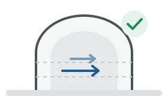
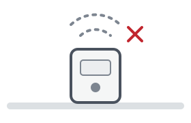
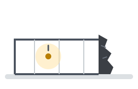

Componentes
Catálogo vivo. En la app vive en /_componentes (solo entorno local) y es la base de las capturas de regresión visual.
Estados
Normal
Vigilar
Actuar ya
Evacuar
Sin datos
Actuar ya
Botones
Lecturas
- Ahora
- 0,72 %
- Esperado en 10 min
- 1,05 %
- Límite para actuar
- 1,0 %
Estados vacíos e ilustraciones

No hay avisos abiertos
Todas las zonas están normales. Te avisaremos aquí si algo cambia.

Este sensor no envía datos
Última lectura hace 14 min. Revisa la conexión o la batería.

Esta página no existe
Puede que el enlace esté mal escrito o que la página se haya movido.
Volver a Hoy